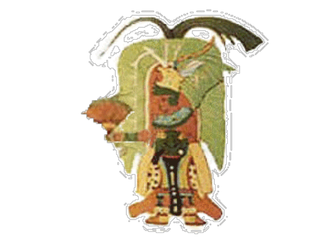
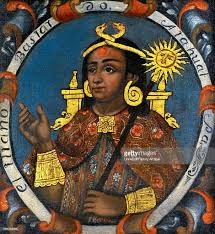
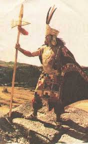
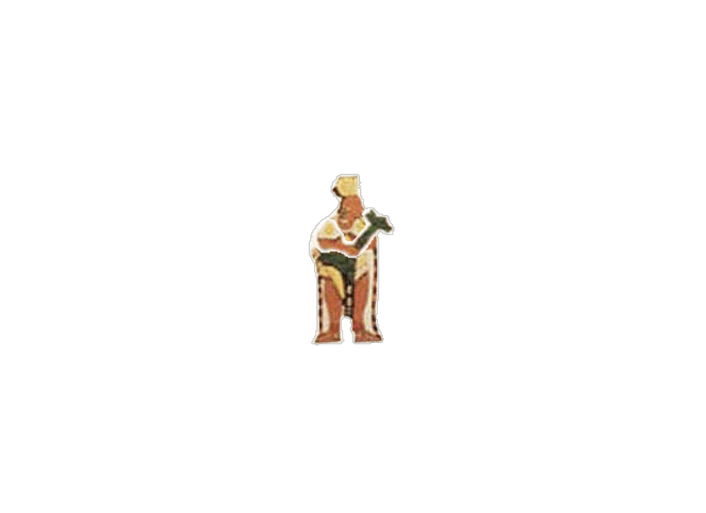
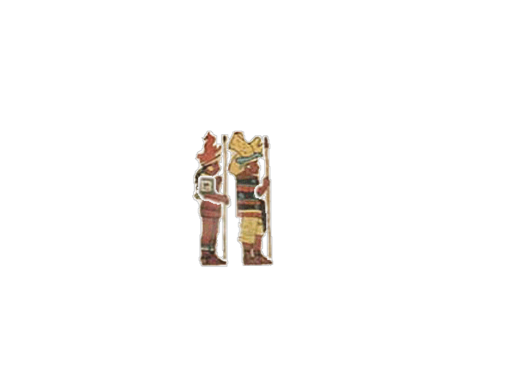
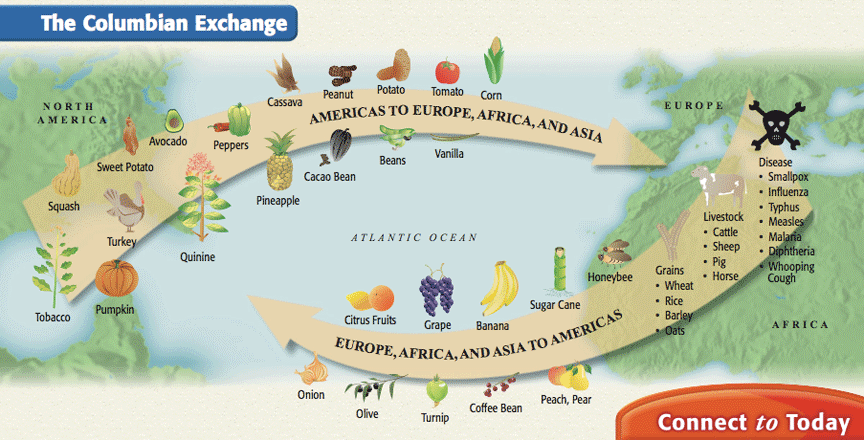
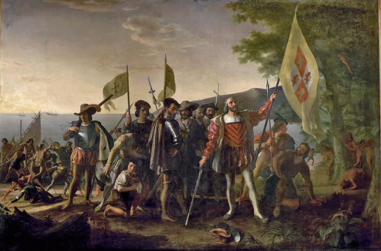
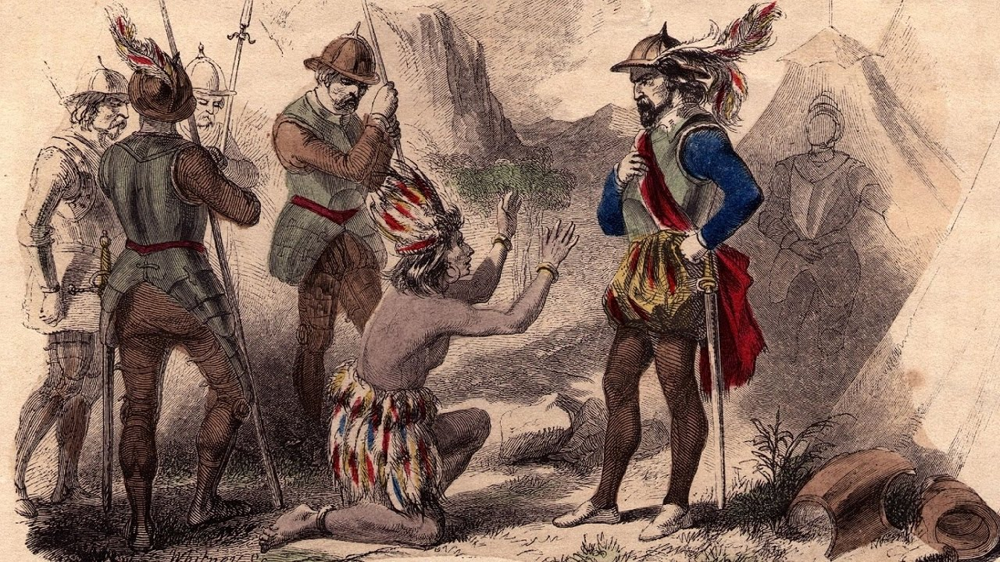
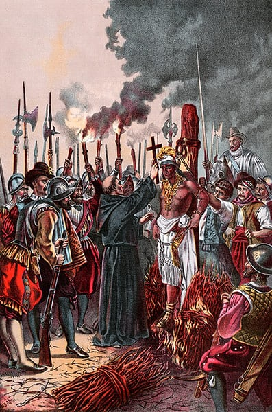

The Inca Empire is a civilization from years 1438-1533 AD. The administrative, political and military centre was located in modern-day Peru. It’s political and administrative structure “was the most sophisticated found among native peoples” in the Americas.
The Sapa Inca was the king of Inca society. He was considered like a god by Inca society and led the nation as its absolute ruler.
  The Ayllu were the basic unit of Inca society. The Ayllu was made up of a number of families, which worked together as if they were one large family. No matter what their social status was, everyone was a part of The Ayllu.
The noble class were just under the Sapa Inca in rank. They had more power than the other parts of Inca society, and they acted as leaders to rule the rest of the population.
The Villac Umu was the high priest, able to speak directly to the sun god Inti. Due to the importance of religion in Inca society the Villac Umu was just behind the Sapa Inca in terms of social status.
The royal family was extremely important to the Inca. Direct relatives of the Sapa Inca received high positions in government, and the main wife of the Sapa Inca was the queen known as The Coya.
After the noble class came the public administrators. This class provided a connection between the noble classes and commoners, without affecting the lives of the nobles.
When the Sapa Inca needed more people he could trust in high positions, a new lass was created called “Inca by privilege”. These people were considered nobles, but not as high in class as the true Inca.
Curacas’ were the leaders of the tribes conquered by the Inca. They were often left as the leaders of their tribes. They had to report to the Inca, and could keep their position as long as they stayed loyal.
Each group of families had a tax collector look over them. Higher level tax collectors kept an eye on lower tax collectors, and they had a distinct hierarchy.
Record Keepers were considered to be generally equal to tax collectors. Their roles were to track which families had paid their taxes, and where supplies were stored.
This is the most important class who are the main population in the empire, they have to work for the nobles and the enjoy less freedom. Some example of them are the farmers, and the Artisans, but the artisans is in a higher level then the artisans.
Artisans worked on crafts such as pottery or gold jewellery for the noble class. Though they were commoners, they were considered a higher rank than farmers.
Farmers made up the largest percentage of the Inca Empire. They were forced to send two-thirds of their crops to the government and priests.
There are about 200000 men in the empire who act as the military force, they are mainly commanded by commanders who are usually the members of the royal family.10 men are commanded by a commander called chunka kamayuq, 100 by a pachaka kuraka, 1,000 men by a waranqa kuraka, and lastly 10,000 led by a hunu kuraka. They are all then under the control of the Sapa Inca.
The Columbium Exchange was the exchange of resources between the old world and the new world. Some key resources exchanged from Europe to the America’s were livestock, coffee beans, sugar cane and diseases. Key resources sent to Europe included tobacco, turkey and a number of fruits and veggies like corn and tomato’s.
The Inca’s social structure was heavily affected by the Columbium Exchange. Due to the food sent to America having diseases, the Incan population decreased. Additionally, after Christopher Columbus discovered the America’s, other nations learnt of their existence.
 After Christopher Columbus discovered the new world, the Spanish empire chose to take over the Inca in order to colonise America. Spain sent 152 soldiers, and as shown by our primary source, despite having a numbers advantage the Sapa Inca named Atahualpa was captured and killed by Spaniards. This led to a number of changes in the Incan social structure and government.
The Spanish captured the Sapa in the battle of Cajamarca and he was then sent to death. The Spanish still let the Incas have their own king after that but he is only a puppet, the Inca government was then failed and everything in under the control of the Spanish.
After the Inca was taken over by Spain, their religion was partially altered to Christianity. This meant that their priests which used to be extremely high ranked within their society lost a lot of their power.